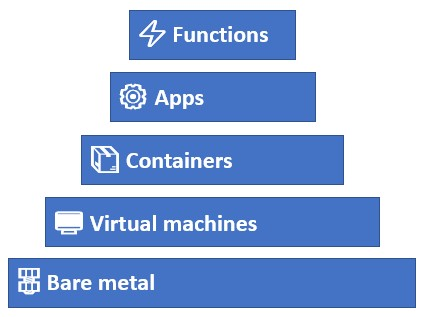
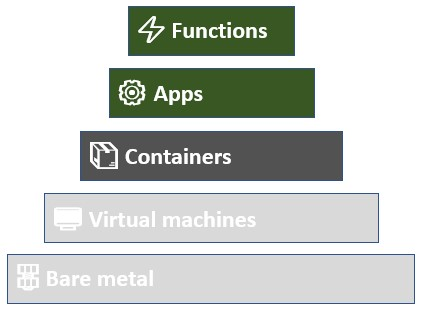

Let's talk containers
A recent talk by one of my buddies at ITQ sparked something and I thought I'd share that with you. It's about containers and where they sit in a software developer point of view.
The platform stack
The thing that caused the spark was this image:

Here we have a rough outline of the platform abstractions we currently see in the wild. Let's start at the bottom.
Bare metal
Let's be quick about this one. There is still a place for running your own stuff in special circumstances, but generally speaking, these days are over. You can do anything you want at this level, but you are also responsible for everything at this level.
Virtual machines
The answers to all the problems in the layer below it. We're no longer dealing with physical things and have moved everything into software. It still comes with a hefty amount of responsibilities like an operating system... still not what we really want.
Containers
We've lost a bunch of stuff on the way up and we're now only defining the context for our application and stack the code on top. It's a lot better but it still has traces of operating systems, ports and networking... We can do better.
Apps
Ok, at this point we're just dealing with a runtime and code. As a developer, this makes me happy. No baggage or dependencies from lower in the stack left over and all we have is thing we care about the most.
Functions
The runtime is gone as well! It does look good but it there's a good risk of overcomplicating things if we attempt to build would-be-apps using functions. There is certainly a case for this given the right requirements, but I would first look if an app would be a better fit.
So what about the containers?
If we look at the stack again, we can make some very clear distinctions. Bare metal and VMs are infrastructure. Functions and Apps are serverless.
Containers sit in a weird place... There's still some infrastructure left, but they're also portable like apps. Containers don't provide any health checks or log aggregation by themselves, but they can be scaled (given the right kind of app running in them!).

The top two layers are where I want to be (from a developers point of view), all that other stuff is just extra baggage.
It runs even deeper when you start thinking about creating value. Does a container create value? It might for existing software that you want to move away from VMs. For new apps? It's just extra work.
Which leads to questions like "why is kubernetes so hot right now?". Is all that extra work worth bringing on board, just to run code? If you go up one level on the platform stack, you lose a whole lot of that complexity and still get to run code! And given the right platform (probably not a container platform! something like Cloud Foundry) you also get health checking, scaling, log aggregation, routing (dns) and more. Not saying a container platform can't do all those things, but someone has to set all that up.
In the end it's mostly Ops business (from a devs perspective anyway 🙂), but the thought that containers are just extra weight keeps coming back to me. Automation can remove a lot of obstacles but I'd rather automate the deployment of an app than a container simply because it has fewer dependencies.
TL;DR
It all boils down to the choice between a container platform and an application platform. I'm pretty confident in saying that a container platform is more complicated than an application platform. There's more to set up and manage for the former, where the latter brings a lot of out the box with it (if we're comparing to Cloud Foundry at least).
Unless you intend to bring all your existing software away from VMs (without changing anything), a container platform is the way to go. If you are in the business of building new software and services (or re-platforming existing stuff!), you might as well skip containers and look into a full-blown PaaS solution instead of CaaS.
Do you want to ship software? or build a platform?